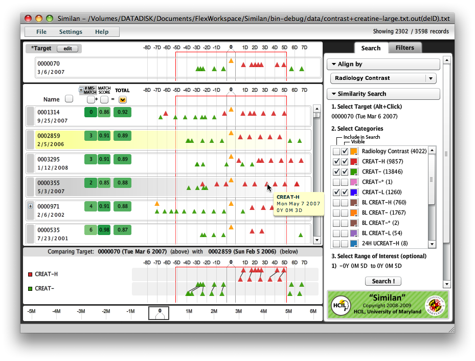
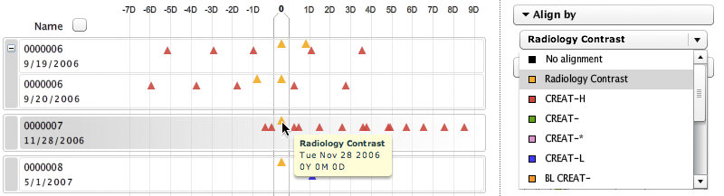
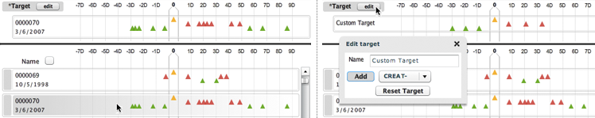
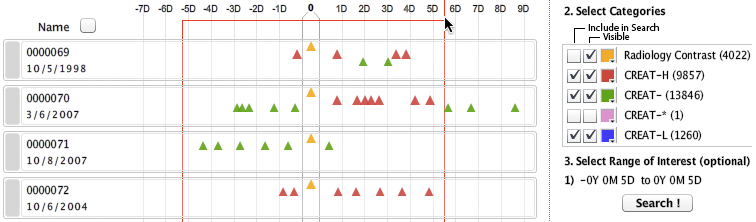
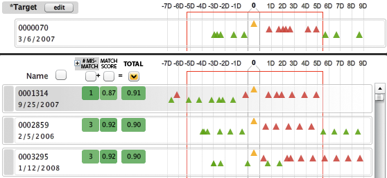
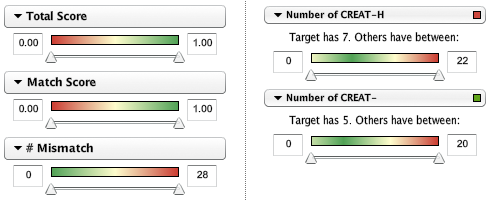
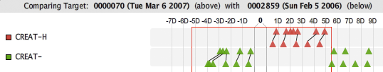
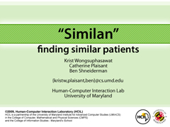

Similan: Finding Similar Records from Temporal Categorical Data

Similan is an interactive data analysis tool that helps users find records that are similar to the target record from temporal categorical data. Similan implements a customizable similarity measure which computes how two records are similar or dissimilar. Similan provides a user-interface for the users to select record from the database as a target or create a custom target record, and customize search parameters. After the users perform the search, the similarity scores against the target record for all records are computed. Inspired by the rank-by-feature framework, Similan can rank these records by their similarity scores. The higher score represents higher similarity to the target record. The results are visualized on the screen with additional filters that allow users to explore the results.
Project Description
Electronics Health Records (EHRs) are being collected by leading health organizations. These EHRs contains millions of records with patient histories. Challenges arise when a practitioner would like to to find records of patients with similar symptoms to the targeted patient in order to guide the treatment of the target patient. Finding similar patients from millions of records with patient histories is a challenging problem.
The initial goal of this project is to enable discovery and exploration of similar records in temporal categorical dataset. The main challenge is how to define "similarity". We are designing a customizable similarity measure that is flexible enough to capture different definitions of similarity according to users' need and allow them to customize this measure in their own ways.
We build a prototype tool called Similan, an interactive tool for finding similar records from temporal categorical data. Similan allows users to specify a target record, customize parameters in the similarity measure computation and provides visualization techniques to help users understand and explore the search results.
Searching by giving an example and rank-by-similarity is more flexible that rule-based searching because it allows uncertainty. In rule-based searching, users need to have pretty detailed knowledge of the record they are looking for in order to formulate the queries. Too specific or wrong queries can result in an empty set of answers, frustrating casual users. In contrast, our approach displays all the results, ranked (or sorted) by similarity.
Although this project was first motivated by EHRs, applications of Similan and the similarity measure are not limited to the medical domain. An increasing number of temporal categorical databases are being collected by various institutions. Tremendous traffic incident logs in transportation systems or massive student records in academic institutes are two examples. Moreover, the similarity measure may be applied in other ways.
Similan Features
Align by Sentinel Category
Similan also adapts idea from LifeLines2 by allowing users to align temporal categorical events by sentinel category. The time is recomputed using the sentinel event as a reference point. Time before the sentinel event becomes positive and time after the sentinel event becomes positive. Since there can be more than one candidate for the sentinel event in the sentinel category (e.g. Patient 0000006 has two radiology contrasts), all possible alignments are grouped together and an alignment which has the maximum similarity score will be selected for ranking.

Select target from database or create custom target
Users can select any record from the database as a target record (left) or create a custom record by placing events on the timeline (right).

Customize search parameters
Users can select range of interest (red box) to specify search range. In this example, user selected five days before having radiology contrast until five days after. Users can also select which categories they want to include in the search.

Rank-by-Similarity
Similan is inspired by the idea of rank-by-feature from Hierarchical Clustering Explorer (HCE). Ranking criteria are derived from the similarity measure. By default, the total similarity score is used for ranking. The higher score represents higher similarity to the target record.

Filter search results
Similan allows users to filter the search results by the similarity score or number of events.

Show comparison
The comparison panel is designed to show similarity and difference between the selected record and the target record. Lines are drawn between pair of events to show similarity and difference. Events are separated by category. The events in the target record are displayed above while the events in the compared record are displayed below.

Video Demonstration
| Title Screen | Description | Available Formats |
|---|---|---|
|
 click to view video (720x540) |
Summary It also shows how users can define a custom target to query for patients who have speficied medical events. Length: 5 minutes 46 seconds |
Shockwave Flash (.swf)
Flash Video (.flv)
Apple Video File (.m4v) |
Participants
- Krist Wongsuphasawat, Graduate Student, Computer Science
- Catherine Plaisant, Research Scientist, UMIACS
- Ben Shneiderman, Professor, Computer Science
Publications
Wongsuphasawat, K., Plaisant, C. and Shneiderman, B.
Event Sequence Queries by Example or by Filters: Design and Empirical Evaluation
HCIL Tech Report, Sep 2009.
Wongsuphasawat, K. and Shneiderman, B.
Finding Comparable Temporal Categorical Records: A Similarity Measure with an Interactive Visualization
To appear in Proceedings of IEEE Symposium on Visual Analytics Science and Technology (IEEE VAST), 2009.
Related Projects from HCIL
Lifelines: Visualizing patient records, criminal records, and personal histories.
Lifelines2: Discovering temporal categorical patterns across multiple records.
PatternFinder: Integrated interface for visual query and result-set visualization for search and discovery of temporal patterns within multivariate and categorical data sets.
Hierarchical Clustering Explorer (HCE): A Rank-by-feature Framework for Interactive Exploration of Multidimensional Data
Related Workshops from HCIL
Personal Medical Devices Workshop: Increasing Patient Healthcare Participation (June 3, 2004)
Interactive Visual Exploration of Electronic Health Records (May 30, 2008)